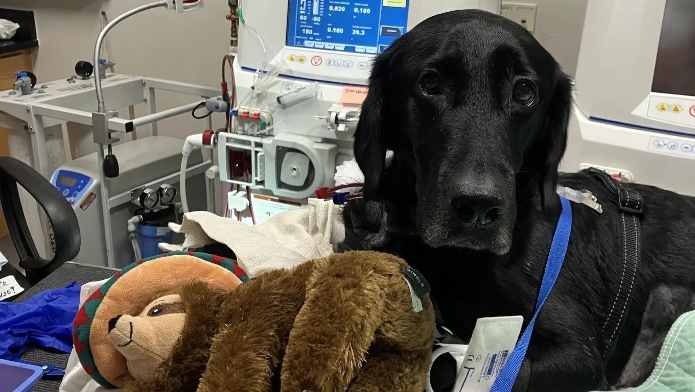

After a Grape Ingestion, Going the Extra Miles for Daddy’s Dog


As a veterinarian, we've seen our fair share of emergency cases, but one that stands out is the story of Pepper, the Labrador retriever who ingested muscadine grapes. The Munn family, including Ian Munn, an NC State alum, went to great lengths to save their beloved pet, driving from Mississippi to Raleigh to seek treatment at the NC State Veterinary Hospital. We'll delve into the dangers of grape poisoning, the treatment options available, and the importance of emergency vet care.
Table of Contents
Introduction to Grape Poisoning in Dogs
Grapes and raisins are toxic to dogs, and even small amounts can cause kidney failure. The exact mechanism of toxicity is still unknown, but it's believed that a compound in the fruit causes damage to the kidneys. Pepper's case was particularly severe, with elevated BUN and creatinine levels indicating kidney injury. Dr. Zsofia Vigh, a veterinarian at NC State, worked closely with the Munn family to provide the best possible care for Pepper.
Treatment Options for Grape Poisoning
Also Read
Check out more pet care guides hereTreatment for grape poisoning typically involves supportive care, such as inducing vomiting, administering activated charcoal, and providing intravenous fluids. In severe cases, dialysis may be necessary to remove waste products from the blood. Pepper underwent canine hemodialysis at NC State, which helped to reduce her toxin levels and support her kidney function. The hospital's nephrology and urology team, led by Dr. Kimberly Kurdziel, worked tirelessly to save Pepper's life.
A key aspect of treating grape poisoning is prompt veterinary attention. If you suspect your dog has ingested grapes or raisins, contact your emergency vet immediately. Time is of the essence in these cases, and delayed treatment can lead to poor outcomes.
| Treatment Option | Description |
|---|---|
| Inducing Vomiting | Removing the toxin from the stomach to prevent absorption |
| Activated Charcoal | Binding to the toxin to prevent absorption |
| Intravenous Fluids | Supporting kidney function and removing waste products |
| Canine Hemodialysis | Removing waste products from the blood in severe cases |
Extracorporeal Therapy for Dogs
Extracorporeal therapy, such as dialysis, can be a lifesaver for dogs with severe kidney injury. At NC State, the veterinary team uses a specialized machine to remove waste products from the blood, supporting the dog's kidney function. This treatment option is typically reserved for severe cases, but it can be highly effective in saving lives.
Expert Tips for Pet Owners
As a pet owner, it's essential to be aware of the dangers of grape poisoning and take steps to prevent it. We recommend keeping grapes and raisins out of reach of your dog, and being mindful of foods that may contain these ingredients. If you suspect your dog has ingested grapes or raisins, contact your emergency vet immediately. Prompt treatment is crucial in these cases, and every minute counts.
Preventing Grape Poisoning
To prevent grape poisoning, we recommend the following:
- Keep grapes and raisins out of reach of your dog
- Be mindful of foods that may contain grapes or raisins, such as baked goods and trail mix
- Monitor your dog's behavior and watch for signs of illness, such as vomiting, diarrhea, and lethargy
Common Mistakes to Avoid
When it comes to treating grape poisoning, there are several common mistakes to avoid. These include:
- Delaying veterinary attention
- Not inducing vomiting promptly
- Not providing supportive care, such as intravenous fluids
Conclusion
In conclusion, grape poisoning is a serious condition that requires prompt veterinary attention. By being aware of the dangers of grape poisoning and taking steps to prevent it, you can help keep your dog safe. If you suspect your dog has ingested grapes or raisins, contact your emergency vet immediately. With prompt treatment and supportive care, it's possible to save your dog's life. Remember, every minute counts, and seeking veterinary attention promptly can make all the difference.
Disclaimer: The information provided in this article is for educational purposes only and should not be considered a substitute for professional veterinary advice. If you suspect your dog has ingested grapes or raisins, contact your emergency vet immediately.
Dr. Amelia Richardson
DVM, Senior Veterinary Editor
Veterinarian with 12+ years of experience in small animal medicine, pet nutrition, and behavioral science. Passionate about helping pet owners provide the best care for their furry companions.
Leave a Comment